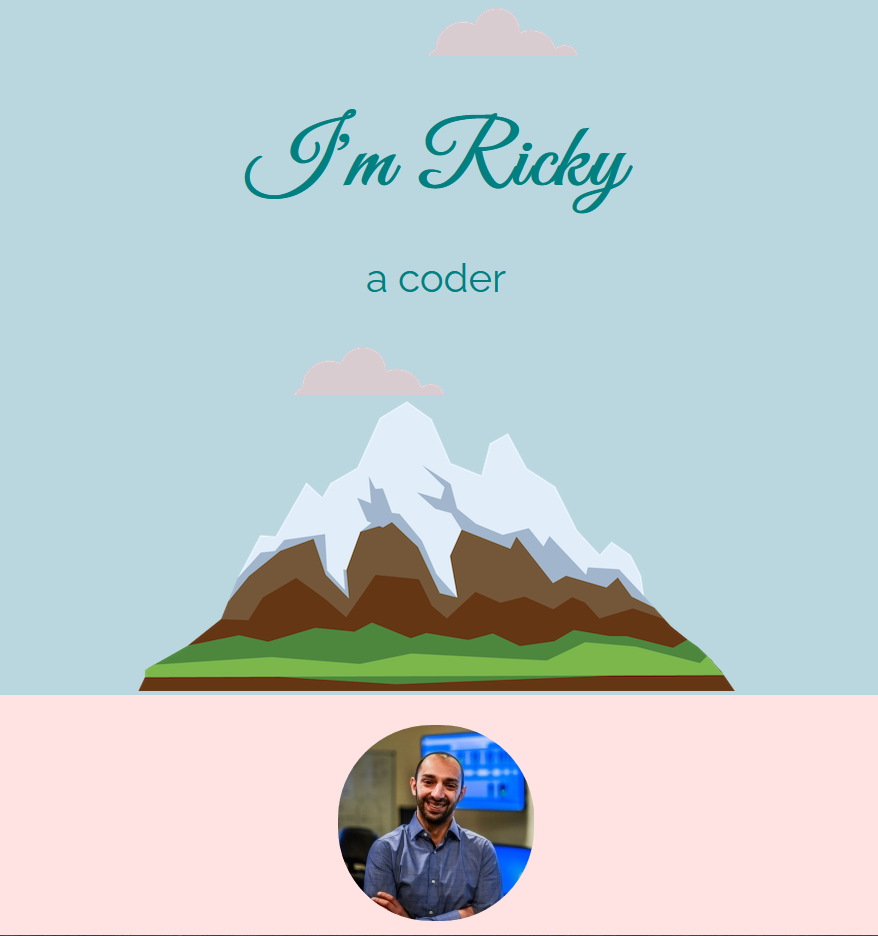

To broaden my skill set I have decided to study web development. I have completed the HarvardX CS50 course and have started Angela Yu's Complete 2021 Web Development Bootcamp on Udemy.
This page will serve as a record of my progress and I will provide links to completed projects.
As well as the initial version of this website, which I have since refactored, my main achievement during CS50 was the final project. For this I designed a Python command line script which uses the metadata embedded in digital photos and uses it to rename jpegs in chronological order. The code for the programme can be found in my github repository. I have also recorded a YouTube video explaining how the programme works is below.
The first part of the course teaches HTML and CSS and then adds the Bootstrap framework. My first two course projects were a basic homepage using only HTML and vanilla CSS and then a mock dating website using elements of Bootstrap, mainly the grid layout system. The images below are links to my github pages hosting those sites.
